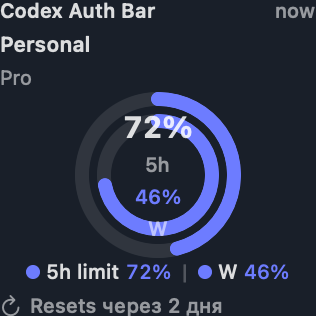

Switch & Restart
Close Codex gracefully, replace auth atomically, and reopen with recovery if anything fails.
Native SwiftUI · macOS 14+
Switch safely, track 5-hour and weekly limits, launch CLI profiles, and keep every account visible in native macOS widgets.
Developer ID release candidate is being prepared. Source is available now under MIT.

Designed for daily use
Close Codex gracefully, replace auth atomically, and reopen with recovery if anything fails.
See 5h and weekly availability across every managed account without opening another window.
Discover and launch named Codex CLI configuration profiles without rewriting your base config.
No analytics or backend. Private file modes, backups, a transaction journal, and credential-free widgets.
Open source and inspectable
Codex Auth Bar has no analytics, advertising, or external backend. Remote usage refresh can be disabled, and the widget process never receives credentials or network access.